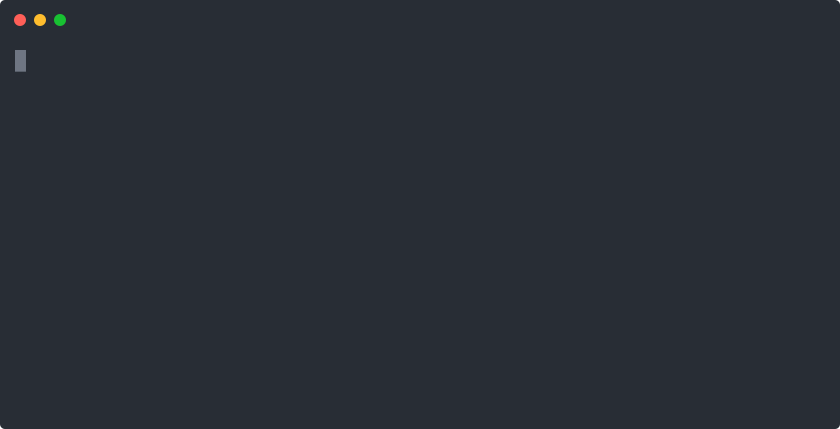

Jump to heading A short introduction into phabalicious
Jump to heading What is this all about?
Phabalicious helps developers in their daily live to interact with their projects. For example setting it up locally and get it running, getting data from a remote instance, inspect a remote instance, etc.
It is a command line utility written in PHP/Symfony which can be downloaded from github.com/factorial-io/phabalicious and installed on your local computer.
All project-relevant configuration is stored in the .fabfile.yaml which is part of your project.
Jump to heading Let's try it out.
For this demo we will install phabalicious in the current folder so it's easy for you to remove it later. You can find the installation documentation here. Let's create a demonstration folder:
mkdir phab-demonstration
cd phab-demonstration
curl -L "https://github.com/factorial-io/phabalicious/releases/download/3.7.5/phabalicious.phar" -o phab
chmod +x phab
./phab --versionThis should print out
phabalicious 3.7.5Congratulations! Phab is installed and working! (If not please have a look at the system requirements)
Jump to heading A simple vue-based example
Let's start with a simple example using a vue hello-world project. First of all we need to create the vue project. Let's assume you are still in the phab-demonstration folder:
vue create hello-world
cd hello-worldVue should have scaffolded a new project into the folder hello-world. Let's create a file to store project's related configuration:
Jump to heading Configuration
One central place to store all project relevant configuration as part of the project, is the .fabfile.yaml.
The project-configuration is composable and tinkerable from multiple, even remote sources. Here's a schema describing the inheritance-mechanism from phabalicious:

It describes all possible ways to inherit data with phabalicious. You can inject global configuration available somewhere on a remote server, parts overridden from configuration-files from your local and merged with the actual project-configuration in your fabfile.yaml.
Let's start with a simple host-config:
name: Vue hello world example
needs:
- git
- yarn
host:
local:
rootFolder: .
yarnBuildCommand: build
Running ../phab list:hosts should list your config:
Available configurations for Vue hello world example
====================================================
‣ local
Before we continue our demo let's have a look into the needs-section. Every config can claim what methods it needs to work properly.
Jump to heading Methods
Methods know how to deal with certain aspects of your application, e.g. how to interact with a database, how to install your dependencies or how to reset or install a Drupal installation.
Here's an example for a typical Drupal application:

On the other hand, a vuejs application might look like this:

Every enabled method for a host-configuration can react to the available commands. Let's have a look.
Jump to heading Commands
Phab provides a bunch of commands (you can list them all via phab list). One of the most often used commands is reset, which will make sure, that your local app respects the latest changes from your code and configuration. Usually you run the reset-command after you switched to a new branch or pulled new code into your local installation.

As we can see in the screen-recording phab will build the yarn application when executing the reset-command. It's because of our needs-declaration in the fabfile.yaml
Jump to heading Scripts
Phabalicious makes it easy to create and modify scripts which can be executed on different instances and from mostly every stage of your task execution. That means you can reuse the same script to configure your environment regardless where it is deployed.
Let's add a custom script to our project:
name: Vue hello world example
needs:
- git
- yarn
scripts:
serve:
- "#!yarn serve"
host:
local:
rootFolder: .
yarnBuildCommand: buildNow let's try this out:
Jump to heading Shells
Shells can interact with a multitude of environments: local or remote servers, even behind jump hosts, dockerized or kubernetized apps. As long as phabalicious can create a shell to your application it can interact with it. So a perfect fit for your local dev-environment and your production hosting.
In the previous example the script was executed in a local shell. Let's add docker into the mix and create a new configuration, which will build a docker image from our hello-world example and run it. Here's the adapted .fabfile.yaml, notice the new host-configuration and a list of docker-tasks:
name: Vue hello world example
needs:
- git
- yarn
scripts:
serve:
- "#!yarn serve"
dockerHosts:
dockerized:
runLocally: true
rootFolder: .
# tasks contains a list of docker subtasks, basically small scripts which can consume configuration
# from the current host and be executed via phab docker <task>
tasks:
stop:
- docker stop %host.docker.name% || true > /dev/null
rm:
- execute(docker, stop)
- docker rm %host.docker.name% || true > /dev/null
build:
- docker build -t vue-hello-world .
run:
- execute(docker, build)
- execute(docker, rm)
- docker run -d -p 8080:8080 --name vue-hello-world vue-hello-world
hosts:
local:
rootFolder: .
yarnBuildCommand: build
dockerized:
inheritsFrom: local
shellProvider: docker-exec
needs:
- git
- yarn
- docker
docker:
w
configuration: dockerized
name: vue-hello-world
projectFolder: .This is our dockerfile:
FROM node:14
ADD . /app
WORKDIR /app
RUN yarn install
CMD yarn serve
So, let's try this out:
Let's recap what is happening behind the scene:
phab docker runwill execute the script snippet from the fabfile sectiondockerHosts.dockerized. The script itself executes another phab command, namelydocker buildwhich will trigger the compilation of the docker image.- the second line
execute(docker, rm)will execute the docker taskrm, which will stop and remove any pending docker container. - After that the docker container will be started.
- Now you should be able to get the output of the app from http://localhost:8080
Now, let's get into the container and inspect the app:
How does phabalicous know what shell is needed? Most of the time it can be inferred from the used methods for a configuration, but you can explicitely override it via the shellProvider-config, in our case we use docker-exec.
Jump to heading Summary
This short intro showed you some key concepts of phabalicious:
- Modular
methodsto adapt the configuration to the needs of your application (in our short example namelyyarnanddocker) - How scripts and the replacement-patterns work together to use host-specific configuration in scripts
- How we can interact with our application with the
shell-command - If you are curious what phabalicious executes under the hood, add
-vto the command
Hopefully this gave you a rough idea what phabalicious is capable of. We didn't talk about scaffolders or secrets, jump into the documentation to find out more. There is also a more theoretical blog-post about the architecture of phabalicious. Or wait for the next episode where we try to add a fabfile to an existing drupal project.